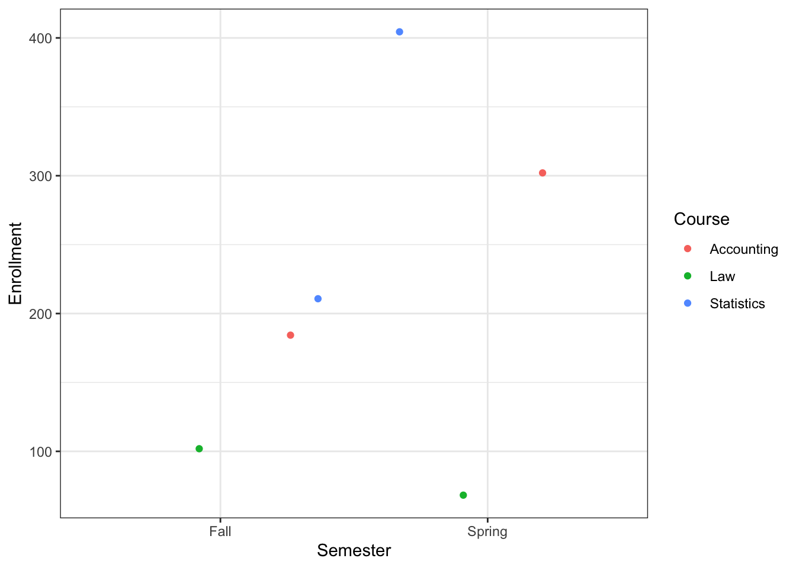
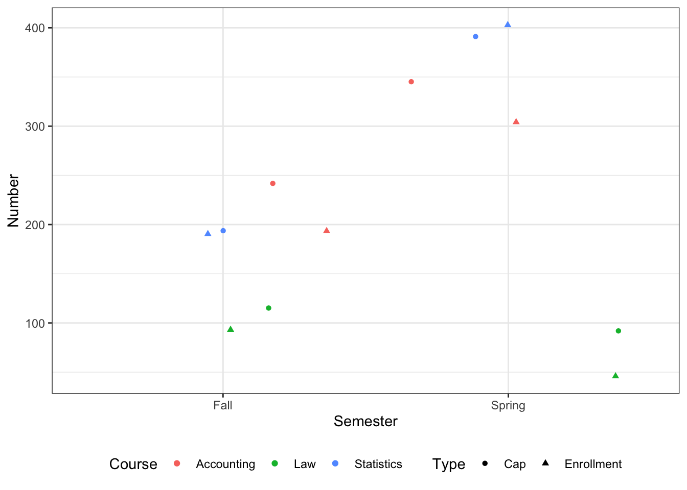

# A tibble: 6 × 4
Semester Course Enrollment Cap
<chr> <chr> <dbl> <dbl>
1 Fall Accounting 200 250
2 Fall Law 100 125
3 Fall Statistics 200 200
4 Spring Accounting 300 350
5 Spring Law 50 100
6 Spring Statistics 400 400
Software Tools for Data Analysis
STA 9750
Michael Weylandt
Reshaping Tidy Data
Where are We?
RBasics- Data Visualization
RProgramming- Tidy Data Manipulation
- Selecting Rows and Columns
- Computing Groupwise Summaries
- Joining Tables
- Reshaping Tables
pythonBasics- Web Scraping with
python
Goals for this Video
In this video:
- Identify wide and long format data
- Pivot data from wide to long format
- Pivot data from long to wide format
Tidy Data
Recall our Baruch enrollment example of tidy data ✅
Tidy Data
We can plot this
ggplot(D, aes(x=Semester, y=Enrollment, color=Course)) +
geom_jitter() + theme_bw()
Tidy Data
Not easy to plot both Enrollment and Cap columns
. . .
Need data in this “untidy” format
# A tibble: 12 × 4
Semester Course Number Type
<chr> <chr> <dbl> <chr>
1 Fall Accounting 200 Enrollment
2 Fall Accounting 250 Cap
3 Fall Law 100 Enrollment
4 Fall Law 125 Cap
5 Fall Statistics 200 Enrollment
6 Fall Statistics 200 Cap
7 Spring Accounting 300 Enrollment
8 Spring Accounting 350 Cap
9 Spring Law 50 Enrollment
10 Spring Law 100 Cap
11 Spring Statistics 400 Enrollment
12 Spring Statistics 400 Cap Tidy Data
ggplot(D2, aes(x=Semester, y=Number, shape=Type, color=Course)) +
geom_jitter() + theme_bw() + theme(legend.position = "bottom")
Wide and Long Data
We switched from a “wide” format to a “long” format
- Not absolute terms, relative to each other
- Wide has more columns (tidier)
- Long is easier for certain plots
Pivots
pivot operations can be used to switch between formats
pivot_longercombine columnspivot_widersplit a column
Syntax is hard to remember - use ?pivot_wider and ?pivot_longer for examples
Wide to Long
pivot_longer(D,
cols=c(Enrollment, Cap),
names_to="Type", # Quote since not a current column
values_to="Number")# A tibble: 12 × 4
Semester Course Type Number
<chr> <chr> <chr> <dbl>
1 Fall Accounting Enrollment 200
2 Fall Accounting Cap 250
3 Fall Law Enrollment 100
# ℹ 9 more rowscolsto pivotnames_to: column where to put (old) column namevalues_to: column where to store old values
Long to Wide
pivot_wider(D2,
id_cols = c(Semester, Course),
values_from = Number,
names_from = Type)# A tibble: 6 × 4
Semester Course Enrollment Cap
<chr> <chr> <dbl> <dbl>
1 Fall Accounting 200 250
2 Fall Law 100 125
3 Fall Statistics 200 200
4 Spring Accounting 300 350
5 Spring Law 50 100
6 Spring Statistics 400 400id_cols: columns kept in placenames_from: column where to get new column namesvalues_from: column where to get values
Looking Ahead
- Apply Grouped Operations ✅
- Summarize Across Multiple Rows ✅
- Join Multiple Tables ✅
- Reshape Tables with
pivotOperations ✅
. . .
Now it’s your turn!
Learning More
For more, check out Chapter 5 - “Tidying” of R for Data Science